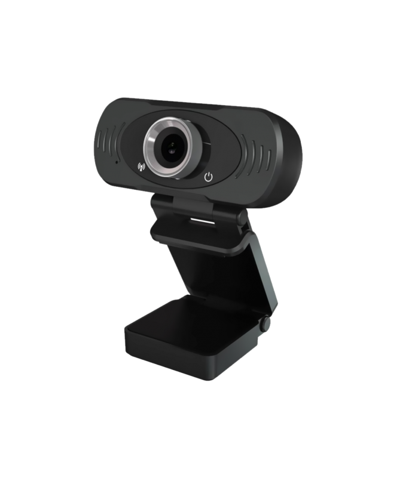
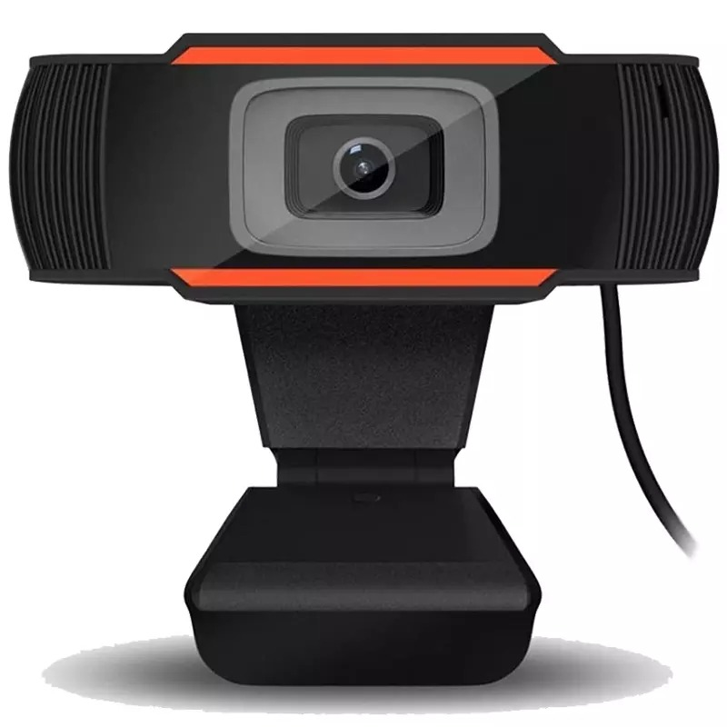
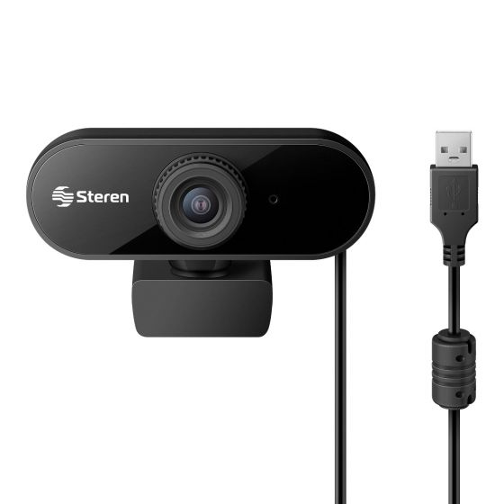
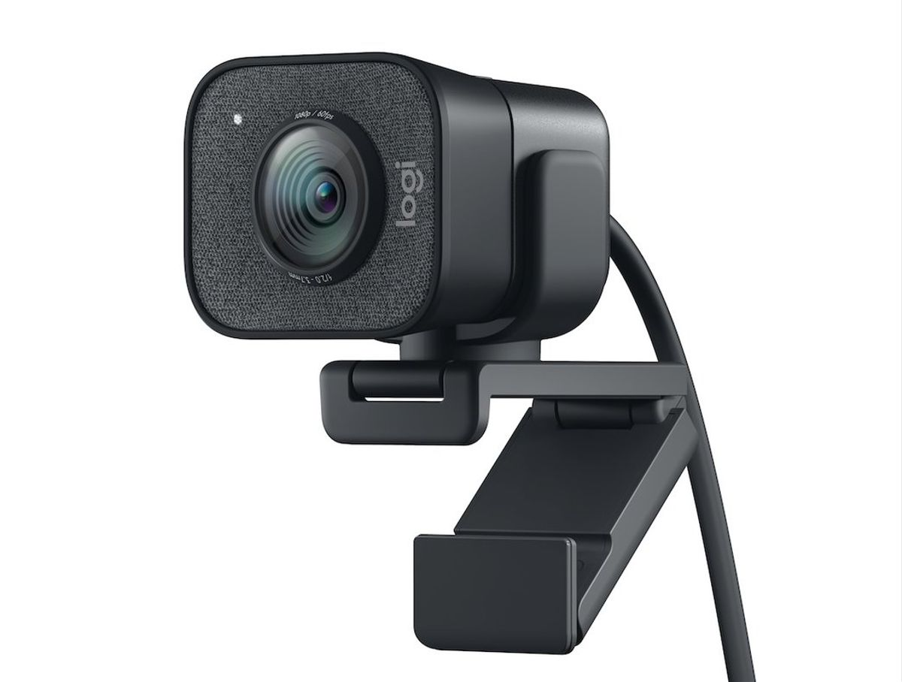
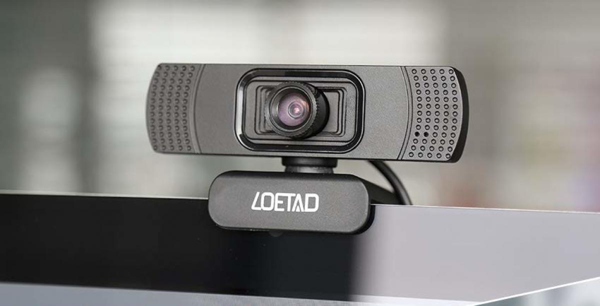

¿Cómo configurar una webcam en nuestra pc?
La instalacion de nuevos dispositivos puede ser en si un poco tedioso es por esto que trataremos
de que se le facilite hacerlo con la siguiente información
¿Qué es una cámara web o webcam?
Una cámara web o cámara de red es una pequeña cámara digital conectada
a una computadora la cual puede capturar imágenes y transmitirlas a través de Internet,
ya sea a una página web u otras computadoras de forma privada. Una cámara web necesita una
computadora para transmitir las imágenes.




Tipos de cámaras web:
Integradas
Muchas computadoras portátiles, especialmente las netbooks y otras computadoras diseñadas
para ser portátiles, incluyen cámaras web incorporadas. Normalmente situadas en la parte superior
de la pantalla, estas cámaras proporcionan una calidad de imagen inferior a la de los dispositivos
de primera línea, pero aún así pueden gestionar las videollamadas.
Independientes
Las cámaras web autónomas son anteriores a la mayoría de los otros tipos.
Compuestas por una unidad de lentes y un soporte o clip, estas cámaras suelen
conectarse a la computadora a través de un cable USB. Estas cámaras web proporcionan
un mayor control sobre los periféricos, permitiéndole elegir una cámara de alta calidad
y un micrófono o auriculares que se adapten a sus necesidades.
Cámaras web con micrófonos
Muchas de las nuevas cámaras web independientes incluyen un micrófono incorporado.
Esto elimina la necesidad de un micrófono o unos auriculares separados. Puedes usar
estas cámaras web con sólo un juego de auriculares.

Pasos detallados
Paso 1
Conecta la cámara web a la computadora. Conecta el cable USB de la cámara web a uno de los puertos USB rectangulares en la parte lateral o trasera de la computadora.
El enchufe de los cables USB solo pueden introducirse de determinada manera. Si el enchufe no encaja en el puerto, gíralo 180 grados y vuélvelo a intentar.
Si tienes una Mac, es probable que tengas que comprar un adaptador USB a USB-C para poder conectar una cámara web normal.
Asegúrate de conectar la cámara web directamente a la computadora, no a un hub USB.
Los hub USB generalmente no cuentan con la energía suficiente para operar una cámara web.
El primer paso es quitar la carcasa metálica exterior de la fuente de alimentación,
que normalmente va anclada con solo cuatro tornillos.
Una vez quitada la carcasa, es esencial
desmontar el ventilador (normalmente va conectado a la otra parte del interior de la fuente con
un solo conector) también para poder limpiarlo de manera individual (aquí tenéis un tutorial para limpiar
ventiladores), así como la rejilla tras la que se monta, por dentro y por fuera, con el trapo de microfibra.
Paso 2
Introduce el CD de la cámara web. Pon el CD que venga con la cámara en la unidad de
CD de la computadora, asegurándote de que el logo esté boca arriba durante el proceso.
Debido a que la mayoría de las Mac modernas no viene con unidas de CD, tendrás que tener una
unidad de CD por separado conectada vía cable USB si vas a usar una computadora Mac.
(Si la cámara web no viene con un CD, omite este paso.)
Para conseguir una copia del software de la cámara web, dirígete a la sección
“Soporte técnico” del sitio web de la compañía de la cámara web.
Paso 3
Espera a que se abra la página de configuración de la cámara web. La página de
configuración de la cámara web se abrirá automáticamente.
Si la cámara viene sin CD, el proceso de configuración generalmente iniciará al conectar la cámara web a la computadora.
Paso 4
Sigue las instrucciones en pantalla. Las instrucciones de las cámaras web
varían según el modelo, pero para la mayoría de los procesos de configuración hay
que hacer clic en una serie de ventanas de preferencia antes de hacer clic en el botón Instalar.
Presta atención a la información de las ventanas en este paso. Necesitarás seleccionar ciertas
preferencias que ayudarán a que la cámara web funcione después.
Paso 5
Espera a que la cámara web termine de instalar. Cuando haya terminado de instalarse,
se abrirá el programa correspondiente, que es cuando podrás empezar a configurar la cámara.
Y listo!!!!
Información recolectada de es.wikihow.com